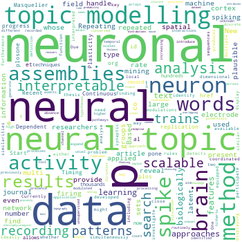

Pamela Hathway
Lab member: 2016-2020

Pamela Hathway was a PhD student working on the problem of large scale neural data analysis, primarily on Neuropixels data. She developed a new technique called "neural topic modelling", adapting topic modelling methods from machine learning originally designed for finding topics in sets of text documents automatically.
Publications
Note that only publications as part of the Neural Reckoning group are included.
2020
-
Hathway P (2020)
Biologically-inspired machine learning approaches to large-scale neural data analysis.
PhD thesis, Imperial College London
2019
2018